This site is a work in progress.
llicit drugs take turns standing in for the unknown of various biopolitical subjects, an expression of their latent enmity and anti-American neurobiology — opium for the Chinaman’s fiendishness, marijuana for the Mexican’s madness, cocaine for the negro’s craze. (Note oxycontin’s exceptionalism, where it stands in for the Caucasian’s despair.)
These narcotics mark their associated users’ exclusions from prevailing notions of futurity — these people’s conflation with the drugs is seen to reveal, rather than beget, their nonproduction, their idleness, their loitering. They are always the origin of their own downfall. They were never going anywhere, except, god willing, away.
chinese opium


african-american cocaine


mexican marijuana


Another way to put this is that in practice, mind-altering substances work their spells on only a certain demographic of minds. When it comes to BIPOC, they lose their efficacy and do not alter but merely unsheathe a hereditary “nature.” The fear of mind control and losing one’s mind is the privilege of those who can take their intellect for granted, after all. Even if such a point of view can no longer be espoused in so many words, the practical results of the criminal justice system show that there still is a line, spongy like a buffer zone, between the victim who is extenuated by circumstance, and the "accomplice to murder" who is profiled "into prison and throw away the key."
People with a substance use disorder who meet the criteria of skin and suburbia can therefore be limned as hostages to their own biology, whereas those who fail the qualifications remain stuck in the default characterization — inseparable from it.
“Some cohorts, particularly less than college educated whites, have lost faith in the American Dream, have little hope for the future, and low levels of resilience and coping skills. This is the population that is most vulnerable to opioid overdose and other deaths of despair, while minorities, who still face objective disadvantages and discrimination, are much more hopeful and resilient.” — The Brookings Institution, 2020
“If you feel like the American dream is no longer accessible, then one may also feel that, Well, it’s not really worth investing in myself ... because investing in yourself is one way to access the fruits of the American dream.” — The True Cause of the Opioid Epidemic
In 2015, Ohio officials began signing up inmates for Medicaid so that they could receive addiction treatment after leaving prison. The Ohio Prisons director himself supported the initiative, telling reporters, “I believe it will reduce the number of people returning to prison. Our investment
Financially speaking, then, opioid use disorder is a wasting disease.
is in communities, not prison.
I’m not going to build another damn prison.
"
Which begs the question — when states began their nine-fold increase on correctional spending in 1985, what was being invested in then? Or rather, whose communities were the prisons an investment for?

One may accurately point out that in the current opioid crisis, the first wave of addiction and overdose was indeed set off by a pursuit of pain relief shepherded by physicians and pharma. 19th-century matronly morphine addiction was also mostly iatrogenic. Which leads us into another set of questions: Who gets to participate in the culture of medication? Who gets to be prescribed, rather than proscribed, into addiction? Who gets to descend from licit to illicit substance use? Who has access to experts, and therefore is not expected to have known any better?

And then, who gets to be prescribed out of it?
1960s, Vietnam: Defoliant spray run during the Vietnam War.
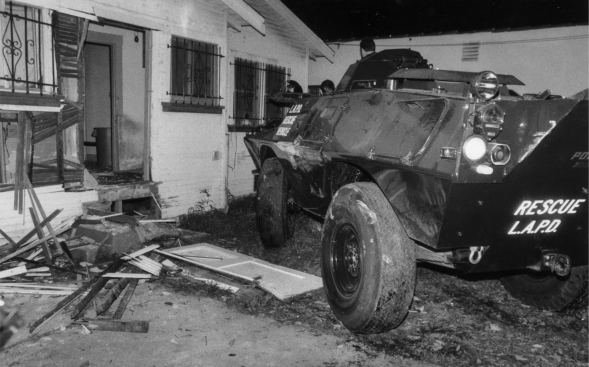1986, Los Angeles: A Los Angeles Police Department battering ram sits next to a South LA home damaged during a police raid.
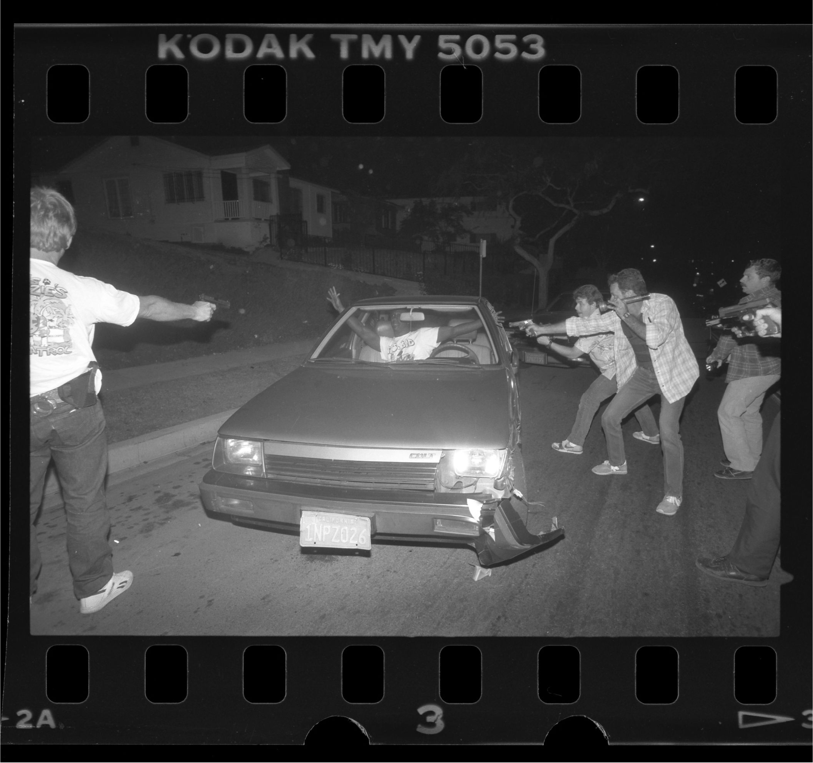1988, Inglewood: A man suspected of buying drugs is the target of police guns after a car chase.
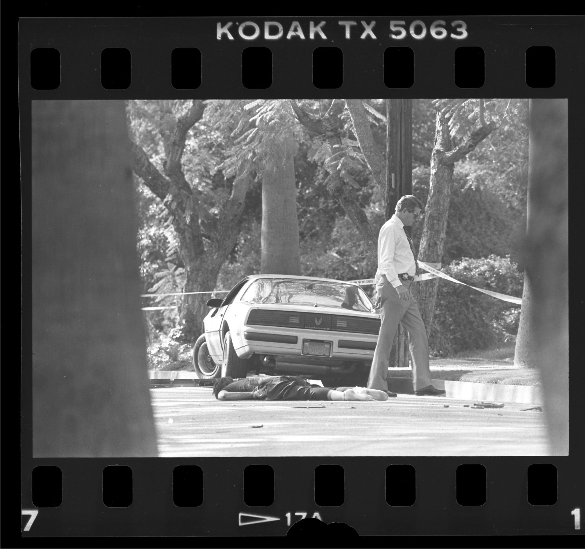1988, San Marino: The body of one of two drug suspects who were shot to death during an undercover heroin investigation by the DEA lies on Monterey Road.

1989, Panama: Flames engulf a building following the outbreak of hostilities between the Panamanian Defense Force and U.S. forces on the second day of the United States Invasion of Panama Fittingly, two of the operations in the invasion were codenamed Operations Just Cause and Blind Logic..

1989, Panama: A U.S. Army M113 armored personnel carrier guards a street near the destroyed Panamanian Defense Force headquarters building during Operation Just Cause.
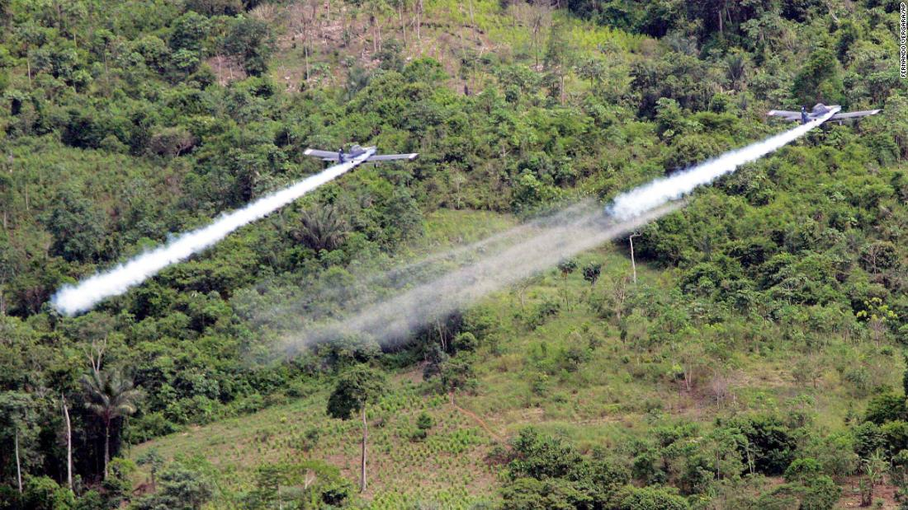2006, Colombia: Two AT- 802 planes fumigate coca fields in San Miguel, 400 miles south of Bogota, as part of Plan Colombia.

2009, Afghanistan: An Afghan poppy farmer watches an AH-1W Cobra helicopter fly over his field in Farah province. The Cobras are providing overwatch protection for Afghan National Police officers and U.S. Marines as they conduct a cordon and search in a small village.

2011, Afghanistan: A corporal stands in an opium poppy field while performing a foot patrol in the town of Sangin.
If you were to lance the boils they would reek resentment sickly-sweet.

 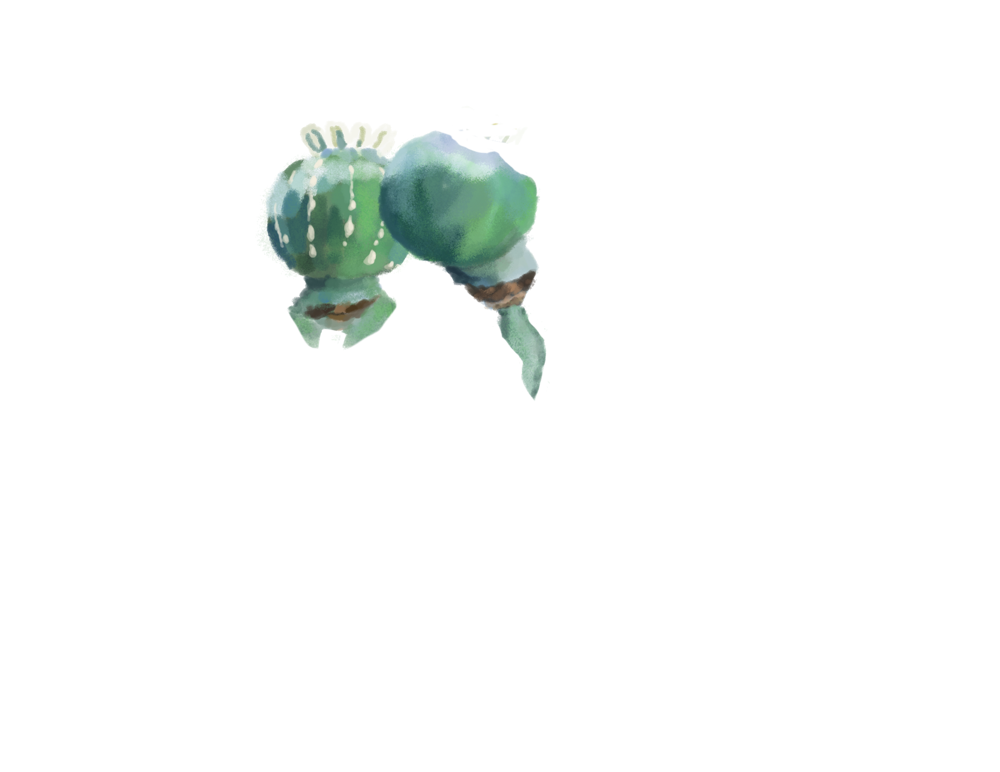
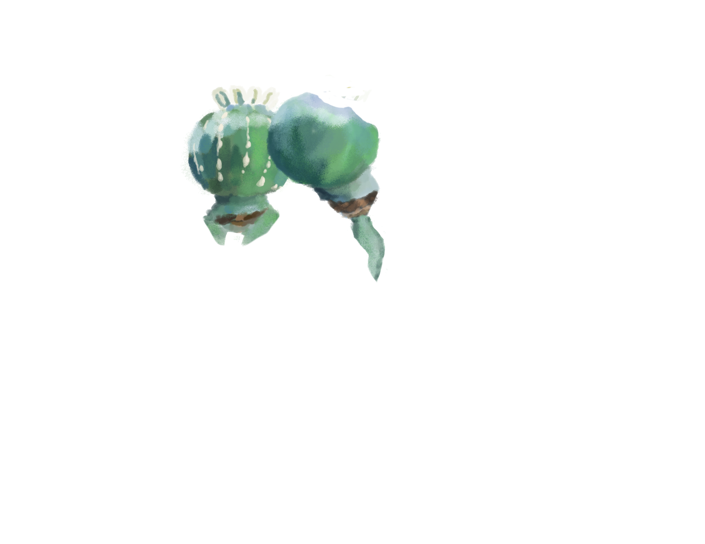
 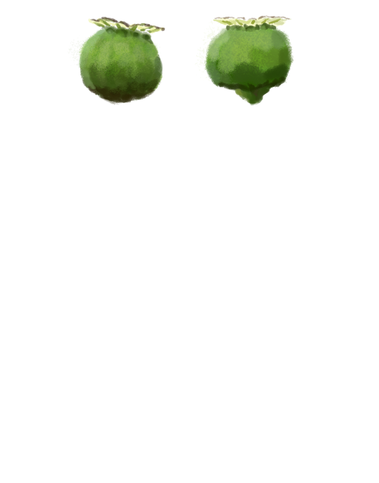
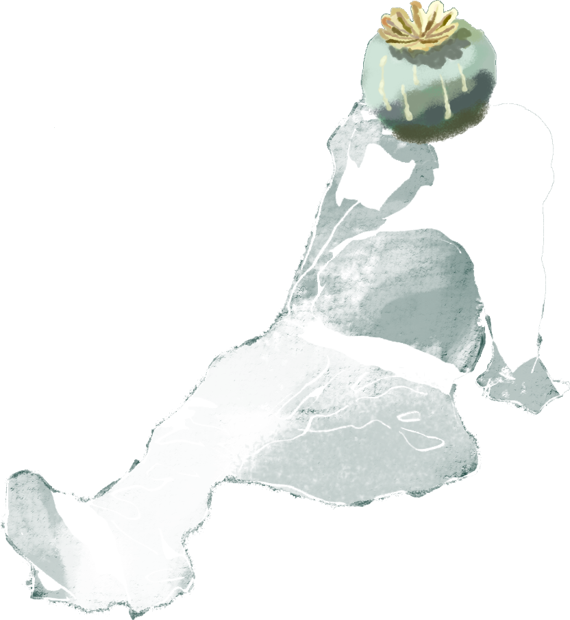
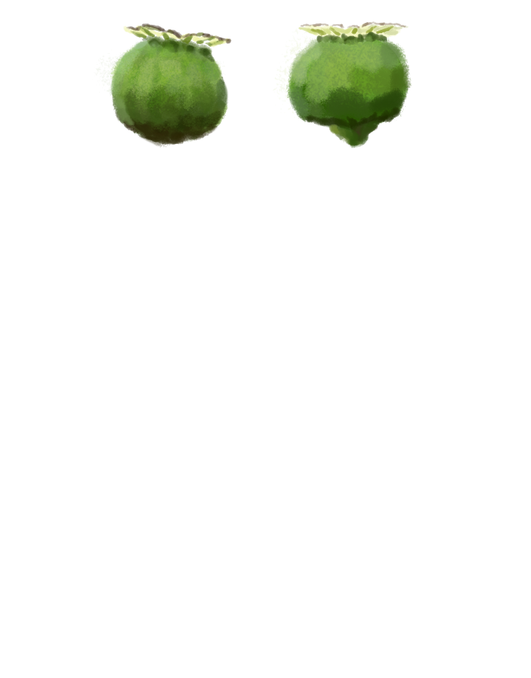
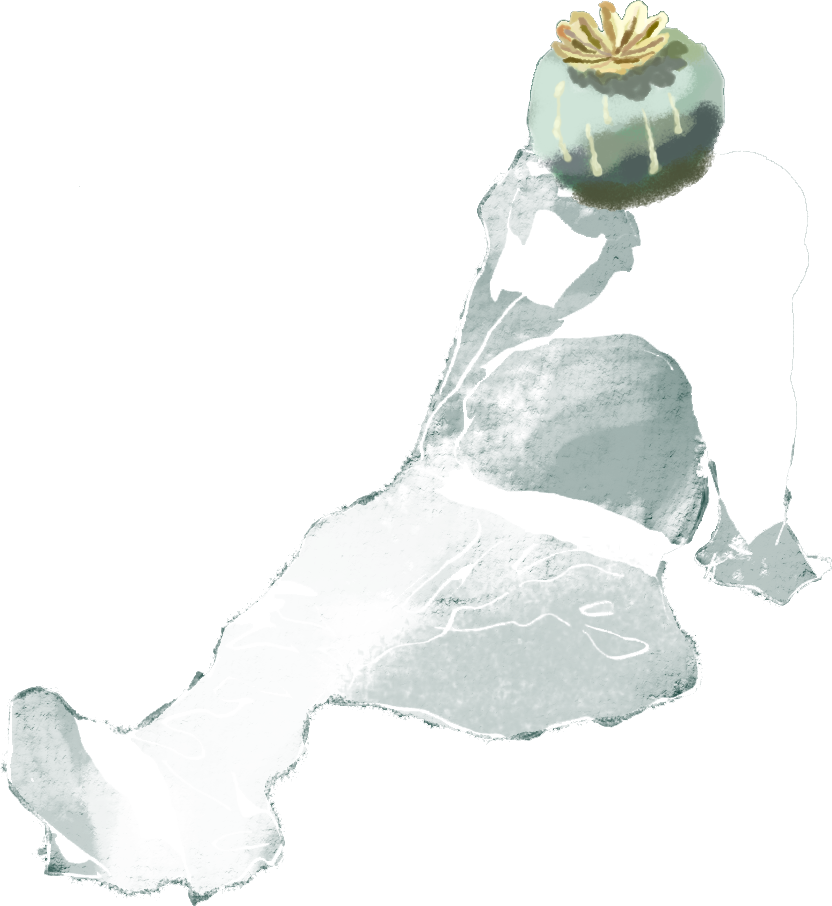
This is a world-ending scenario I am building. It is still in progress.


 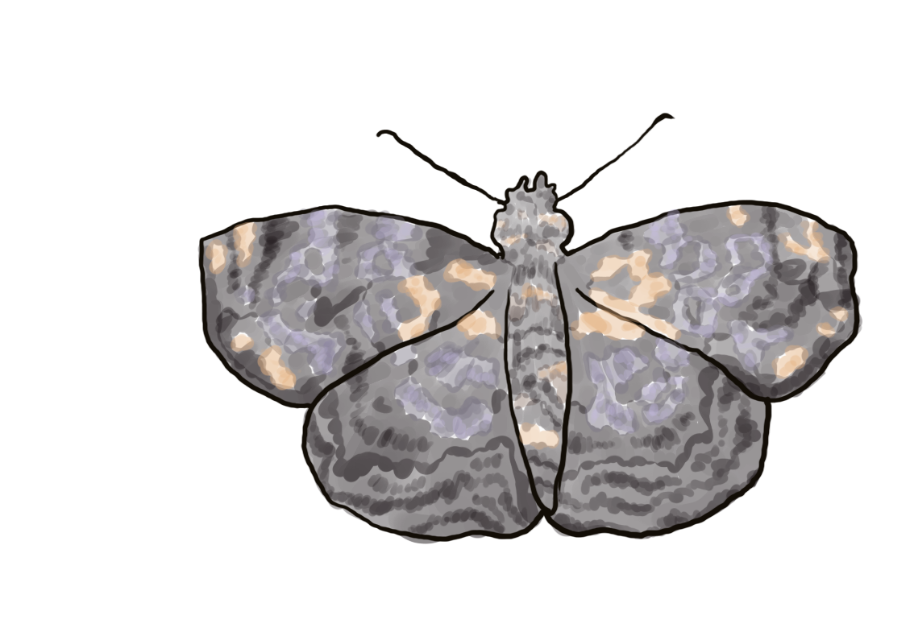
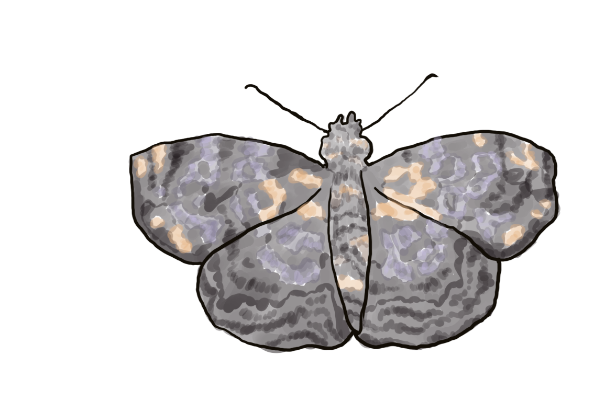